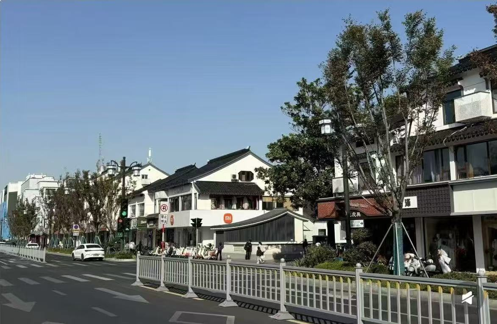
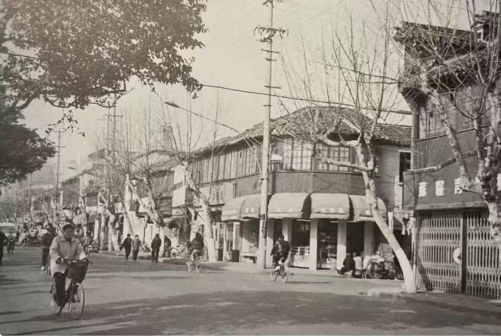

SUZHOU · ONE FRAME · TWO MOMENTS
Stand in the same place, decades later.
Match archival photographs with the streets of Gusu today. Explore from anywhere, or follow the route and make your own then-and-now image.
03 verified viewpoints⌖ optional location○ photos stay on device


↔
ARCHIVETODAY
Niujia Lane · 钮家巷Drag across the photograph
01CHOOSE A CHANGE TO FOLLOW
Three corners. Three ways a city changes.
Each photograph holds a different clue: the rhythm of street life, a changing urban edge, or architecture that endured.
A SMALL ACT OF FIELDWORK
Look closely. Find the frame. Bring it forward.
- 01Choose a story
Preview the transformation remotely before deciding whether to walk there.
- 02Find the viewpoint
Use the map, bilingual place name and visual framing notes to locate the original angle.
- 03Make a new record
Align the archival image, take your photograph and download a personal comparison postcard.
THE FIELD ROUTE
Walk from one surviving clue to the next.
A north-to-south walk through central Gusu.
Not visited✓Visited